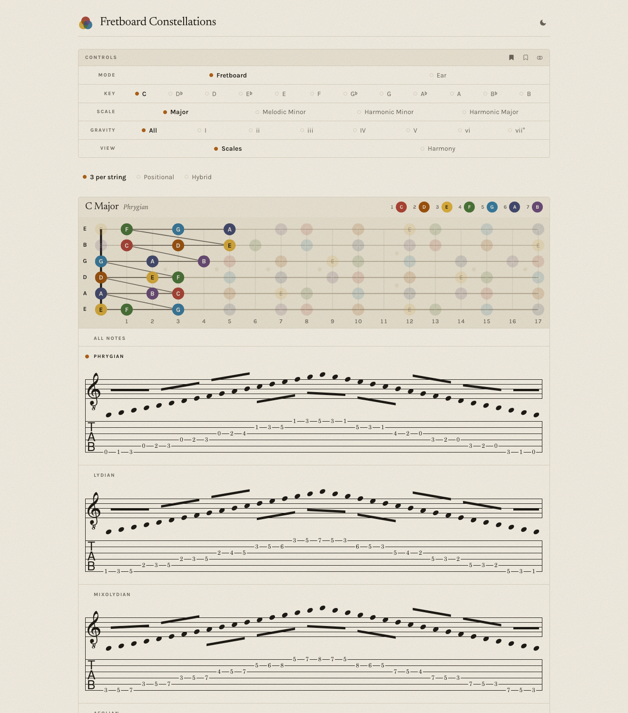

No. 01 Case study · 2025 – present
Fretboard Constellations
An interactive theory instrument for guitar — built to teach the way an expert actually teaches: by seeing, hearing, and playing, not by reading.
In short
- The problem
- Theory tools explain; a live guitar lesson needs one you can do — see, hear, and play a pattern, not read about it.
- My role
- Sole product designer and developer — product thinking, UX, the visual system, and the TypeScript/React build.
- The defining decision
- Design for the expert teaching live on a shared screen, not the lone learner — which cascaded into Lesson vs. Studio modes and disclosure by relevance, not level.
- The outcome
- A deployed, in-use instrument on a theory-as-data engine (new scales, chords, tunings — even a new instrument — are data files, not code), with a function engine that reads a progression and names what every chord is doing in the key.

Overview
A living textbook for the guitar
Fretboard Constellations renders music theory — scales, chords, harmony — as colour-coded shapes across the neck that you can see, hear, and play. I own it end to end: the product thinking, the UX, the visual system, and the TypeScript/React build. It grew out of a decade of teaching, rebuilt as software.
The thesis
Theory exists to free expression, not to be studied
Most theory tools explain. This one lets you do. The idea underneath: technique and theory exist to free expression — one transferable pattern, applied across the instrument. The less you have to think, the more you can play. So the app never lectures; it shows the pattern and hands you back the instrument.
The defining decision
Designed for the teaching room, not the lone learner
The hardest and most clarifying decision came first: who is the primary user? Not the self-directed learner most theory apps assume — but an expert teaching live, on a shared screen. That single choice cascaded through everything. An expert drives, so nothing is skill-gated — everything stays reachable. A student is watching, so the screen has to stay calm and legible. And disclosure happens by relevance, not by level.
It's why the app splits into a Lesson Mode — calm, the neck and score at maximum size, minimal chrome, the real primary state — and a Studio Mode with every control visible, for preparing alone. Designing for the room where teaching happens decluttered more than any amount of control-tidying could.
The core architecture
Theory as data, not code
Under the UX is a product decision: Fretboard Constellations is an engine that renders theory data. Scales, chords, voicings, tunings — even whole instruments — live as plain data files; the engine reads them and draws and plays them. Adding a scale, a chord, or a new tuning means adding a data file, not touching the engine. Small surface area, limitless content — and the reason the app can keep growing without collapsing under its own features.
The load-bearing idea
The app is a search tool, not a display
Here's a chord → here are the keys it could live in → watch the space narrow as you add the melody note, the next chord, the mode. That's how theory actually gets used in a lesson — as reverse-engineering — and the app makes the search visible: a thin context band shows the current key hypotheses, the candidates still in play, and what just narrowed them. The student watches the engine run. It's the thing that makes it this app and not a chord chart.
The band is built, in a lead-sheet workbench called Play that isn't switched
on in the public version yet, and one decision made it teach. The chord-by-chord
analysis does not live in the strip — it is drawn
on the bars themselves, so an accented V7/ii sits
directly under the A7 that is doing it, and changing which key you are reading
in re-labels the whole score in place. Analysis in a side panel asks a student
to hold two things at once; analysis on the chord is just a caption.
The signature view
Externalizing the map an expert carries
An experienced player holds a mental image of the neck — where the notes live, how shapes connect. Fretboard Constellations externalizes that image. Each scale degree gets a colour; every shape appears in all its positions across the neck as hoverable constellations, with standard notation and TAB, and all of it is playable — click a chord to strum it, a scale box to run it. When the harmonic context is ambiguous, overlapping constellations are colour-coded so the candidate keys read at a glance.

The analysis layer
A key that bends instead of breaking
The hardest problem wasn't drawing shapes — it was teaching the app to say what a chord is doing. Naming one chord's role is a lookup. Naming the roles across a whole progression means choosing a key first, and real music makes that a judgement call rather than a fact.
The naive version fails in a way that is obvious the moment you teach with it: one chord from outside the key disqualifies the key, so a perfectly ordinary tune reports no key at all — or flips to a new one every other bar. So the engine ranks keys by how well they explain the whole progression rather than testing them for purity. An out-of-key chord reads as a visitor: it costs the key some confidence, it doesn't kill it. Each chord is then read nearest-first — diatonic, then secondary dominant, then borrowed, then tritone substitution — so the app reaches for the ordinary explanation before the exotic one, which is exactly what a teacher does.
That tolerance is a pedagogical position, not a technical convenience. It lets the app hold several readings at once and show the student a hypothesis being weighed instead of a verdict being announced — and because every surface that names a function runs the same engine, the score, the strip and the reveal can never contradict each other.
The design system
Two visual languages, sharing one box
The app had a tidy rule: a rule under the word meant pick exactly one, a dot before it meant pick any number. Defensible on paper, and wrong in the panel — because a control box holding both marks read as two designs stacked in the same container. The mark was carrying information nobody needed at the cost of the thing everybody sees.
Every choice now wears the same dot, lit like an indicator lamp when it's chosen. What's lost is that the mark no longer announces whether a row takes one answer or several — but the row already says so, because a pick-one row never has two dots lit. The dot was also the older, better-known convention sitting in plain sight: a radio button is a filled dot, and always has been.
The same audit sorted the navigation into four scopes that had been quietly collapsed. A “Mode” row had been living inside the control panel while deciding which rows existed beneath it — a control that rewrites its own container can't sit inside it. Worse, in an app that teaches modes, a row called Mode that wasn't about modes is a collision you can't explain away. The rule that settled it: the navigation says what you're doing; the panel says what you're doing it to.
The look — “Paper & Night”
An art-book, not a dashboard
The visual direction is literary, not utilitarian: a serif (Newsreader) for display, a clean grotesque (Karla) for everything operational, and a warm paper ground that stays calm and legible projected on a wall in a lesson. A Night mode carries the same system into the dark.
Where it is · what's next
Deployed, and still growing
Live, and in use in real lessons. It renders scales as their seven playable position boxes, chords as voicing shapes with independent structure and inversion, and a Harmony view of a key's diatonic chords with Roman numerals — every shape playable across the neck, with proper engraved notation and TAB. Alongside the fretboard there's now Ear Training, which drills chord quality and function against the same theory data. A third area, Play, the lead-sheet workbench where the function engine reads a progression you've entered, is built but still behind a switch: it isn't in the public version yet.
The data-driven bet paid off where it counts. Ukulele — baritone and tenor — shipped without the engine changing: a different number of strings, tuned differently, is a data file. That was the promise made on day one and it held up two hundred commits later, which is the only real test an architectural decision gets.
Honest about where it is: it's still labelled beta, the visual grammar has been re-audited more than once, and the progressive-disclosure onboarding — the thing that would let a stranger use it without me in the room — is designed but not built. It's a tool built for the teaching room first, and it shows, in both directions.